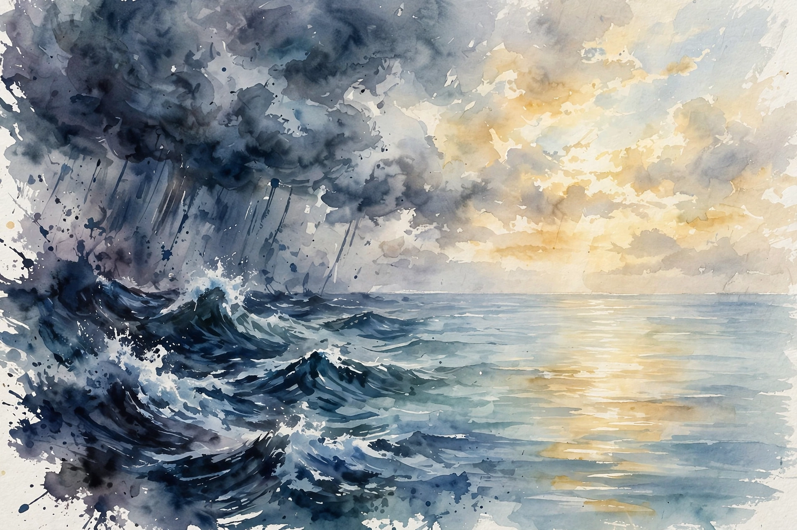

Naval Ravikant · The Happiness Collection · Companion
Happiness
Every happiness episode in one collection: why comfort is hard mode, why desire is a contract to be unhappy, why happiness is a trainable skill, how the mind became the master, and why the path to peace runs through truth rather than effort.
Illustration. The still lake at dawn: peace as the goal. AI-generated watercolor made for this page.
Watch. The official Naval podcast episode video. Use the chapter menu above to jump to any section of this companion as you listen.
The Wisdom Index: every nugget in this companion
- Admit where you are not the expert
- Buy out of unhappiness first
- Read for the message, not the words
- Train happiness like a muscle
- Cancel the contract
- Peace is a performance tool
- Decisions beat hours
- Name the fake play
- Demote the mind to servant
- Understand your way to peace
- Trade self-improvement for self-understanding
00:00
A practical philosophy
The episode opens with the mission. This is not abstract philosophy in fancy language. It is practical philosophy: health, wealth, and happiness as trainable crafts. The working hypothesis is that if one person learned something that made them happier, healthier, or wealthier, you can learn it too.
Health gets the one-word summary: financial health, physical health, mental health. Naval is blunt about his limits here. On wealth he is self-actualized. On happiness he went from mostly unhappy to very happy, deliberately, through practice and realizations. On physical health he says he would feel fraudulent preaching, because he is not a paragon of it.
Wisdom nugget 1
Source factAdmit where you are not the expert
What happened. Naval refuses to teach physical health as doctrine, saying he lacks the lived result, while he teaches wealth and happiness from results he earned.
Why it matters. Credibility comes from results, not reading. Naming your weak lane makes your strong lanes believable.
Principle. Teach only what you lived through. For the rest, point to people who did.
00:04
Happiness without comfort is hard mode
You can be happy without wealth. But wealth buys you out of common causes of unhappiness: it gives freedom and time. Renouncing the material world, the monk path, is the harder road. Naval notes that after 30 years in the woods most monks probably never got over the desires they renounced. Whatever you deny yourself becomes your new prison.
It is easier to fulfill material needs than to renounce them, he argues. And physical health is the foundation under everything: "A sick man only wants one thing, a healthy man wants 10,000 things."
Illustration. The still lake: peace as the goal, not excitement. AI-generated watercolor made for this page.
Wisdom nugget 2
Source factBuy out of unhappiness first
What happened. Naval says money cannot buy happiness, but it can buy you out of the standard miseries, and that renouncing comfort takes longer than earning it.
Why it matters. It orders the work: secure the body and the bills, then train the mind. Do not start with the hardest mode.
Principle. Treat wealth as unhappiness insurance and health as the foundation, then work on peace directly.
00:08
Happiness is poetry, not math
Happiness is a loaded word. People mean pleasure, contentment, or enlightenment by it, and they argue past each other. Naval says to treat his claims like poetry, not algorithms: do not map words across poems like a proof, absorb the overall message instead.
This is also his answer to the cynics who say misery comes from pursuing happiness. There is truth in that objection, and he will get to it. But the frame stays: ponder the thought process, not the sentences.
Wisdom nugget 3
Source factRead for the message, not the words
What happened. Naval warns that his happiness claims cannot be linked like math theorems, and asks listeners to absorb the spirit instead.
Why it matters. Advice about the inner life breaks when you treat it as a spec. It works when you let it reframe how you see.
Principle. When learning philosophy, ask what changed in your perception, not whether every sentence is airtight.
00:11
Happiness is a trainable skill
The first step is the belief that you can change it. Most people think their happiness level is fixed, so they devalue the whole project. Naval says genetics sets about half the dial. The rest, temperament, outlook, peace, anger, is far more trainable than athletic performance or raw intelligence.
Happiness is a skill like nutrition and fitness. You identify it, you develop it, results arrive slowly as you improve. It is not handed out at birth and frozen.
Half the dial is yours to turn
Your genetic set point is only about half of happiness. The rest answers to practice.
Source. Episode section: Happiness Is a Skill You Can Develop.
Wisdom nugget 4
Source factTrain happiness like a muscle
What happened. Naval puts the genetic set point at about half and says contentment is more malleable than strength or IQ.
Why it matters. A fixed mindset about happiness is the lock on the door. Half the dial is plenty to change a life.
Principle. Schedule happiness practice like gym time: daily reps of the practices in this episode.
00:14
Desire is a contract to be unhappy
The centerpiece is the contract metaphor. You get disturbed wanting it, you suffer getting it, and when it arrives you revert to baseline. No single thing makes you happy forever. If obtaining things made us permanently happy, the cavemen were miserable and we are delirious with joy. The record shows otherwise: net happiness is flat or falling.
Happiness, then, is a return to the state where nothing is absent in this moment. Not a peak you climb to, but a baseline you stop leaving.
Desire's a contract you make to be unhappy until you get what you want.
Naval Ravikant, from the episode
Toy: the desire audit
Type a desire, then mark whether it is borrowed (copied from other people) or true (yours alone). The episode claims most desires are borrowed.
No desires listed yet.
Wisdom nugget 5
Source factCancel the contract
What happened. Naval argues that desire manufactures its own suffering and delivers nothing permanent, so the target is the moment with nothing missing.
Why it matters. Every desire you sign is a scheduled unhappiness. Most of them were never yours to begin with.
Principle. Before you chase a desire, ask who gave it to you. If the answer is paid ads or peers, decline the contract.
00:17
Smart, driven, and happy is allowed
Two objections get answered. First, smart overachievers say happiness is for the simple-minded and that peace will kill their drive. Naval concedes the grain of truth: the happier you are, the less likely you are to storm out and change the world. But unhappiness is wildly inefficient. A peaceful mind makes better decisions.
Second, unhappiness clouds judgment. The driven, unhappy mind runs 24/7, sleeps badly, reacts in anger, and drowns in the busy trap. When Naval got happier, he worked less hard and became more effective, because he could see long-term outcomes clearly and stopped haggling over an extra 20 percent.
Wisdom nugget 6
Source factPeace is a performance tool
What happened. Naval says unhappy high-achievers make emotional, busy-trap decisions, and that his own effectiveness rose as his hours fell.
Why it matters. Drive without peace is motion without steering. Calm is not the enemy of ambition. It is the steering wheel.
Principle. Protect your peace as a business asset. A clear head beats a frantic one.
00:20
Work the least for it
Quality of decisions beats quantity of hours, because everyone now has force multipliers: code, media, capital, community. Naval cites Warren Buffett, who makes the right call 85 percent of the time against competitors at 70 percent, and wins everything. Buffett makes one or two decisions a year and spends the rest reading and thinking.
Ask yourself: would you rather be the best in the world by working the hardest, or by working the least, because you worked the most intelligently? Knowledge is power, and happiness improves the decisions that knowledge serves.
85 percent vs 70 percent: the compounding of judgment
Two decision-makers compounding capital over 20 years. Small edges in judgment become enormous gaps with time.
■ 85% right (Buffett) ■ 70% right (competitors)
Source. Episode: the Buffett 85 vs 70 percent example. The curves are illustrative math of compounding decision quality.
Wisdom nugget 7
Source factDecisions beat hours
What happened. Naval says hard work is not the answer. Good decisions plus high force multiplication are, and he points to Buffett's one-or-two-decisions-a-year pace.
Why it matters. In a multiplied world, one great decision outweighs a thousand frantic ones.
Principle. Spend your best hours on the few decisions that matter. Let the rest be good enough.
00:23
The war against weaponized addiction
All pleasure creates its own offsetting pain and fear of loss. In an age of abundance, pursuing pleasure for its own sake creates addiction. The modern struggle is the disconnected individual standing up to weaponized addictions: alcohol, drugs, porn, processed food, news, social media, games.
Addictions are fake work and fake play. They hold together fake relationships and fake activities. Breaking them is socially unacceptable, because it means replacing your friends and your fun, which is why most people never try.

Illustration. From storm to glass: the mind calming down on its own. AI-generated watercolor made for this page.
Wisdom nugget 8
Source factName the fake play
What happened. Naval argues that engineered pleasures deliver small doses and then desensitize you, and that quitting forces a lifestyle change, not just willpower.
Why it matters. You cannot win a fight you will not name. Most unhappiness budgets are spent on subscriptions to fake play.
Principle. Audit every pleasure for its offsetting pain. If quitting would cost you your social life, the social life was rented.
00:25
Peace from mind
When Naval says he wants happiness, he means peace. Not peace of mind: peace from mind. In your moments of greatest pleasure, the voice in your head goes quiet. That silence is what you chased, not the stimulus.
The mind is a useful tool that became the master. Humans are the most paranoid creatures ever to walk the earth, and the wiring made sense when a rustle in the bushes was a tiger one time in ten. Modern life is safer, so the paranoia is now mostly misfiring. You cannot force the mind quiet, any more than you can obey the order not to think of a white elephant. You build tools that let it calm down on its own.
Wisdom nugget 9
Source factDemote the mind to servant
What happened. Naval reframes happiness as the quieting of mental chatter, and says the paranoid wiring that saved us on the savanna now misfires in safe modern life.
Why it matters. You chased the silence all along, not the drug, the purchase, or the win. Aim at the silence directly.
Principle. Do not fight the mind. Watch it, understand it, and give it less to be paranoid about.
00:26
Peace is happiness at rest
Mental stress is an inability to decide what is important: wanting two incompatible things at once. Give up on one of them, or accept it is out of your control, and the stress dissolves.
Peace is happiness at rest; happiness is peace in motion.
Naval Ravikant, from the episode
The goal is not happiness, he says, it is peace. And you cannot work your way to peace, because peace is inactivity, the sense that everything is fine. You can only work toward understanding. An old Sikh saying he quotes: the name of God is truth.
Wisdom nugget 10
Source factUnderstand your way to peace
What happened. Naval defines stress as indecision between incompatible wants and says peace cannot be achieved by effort, only by understanding.
Why it matters. The harder you chase calm, the further it runs. Comprehension is the only door.
Principle. When stressed, decide or surrender. Then study the truth of the situation until the charge drains out.
00:27
The path to peace is truth
Wise people are quiet, not as a performance but because they are quiet inside. "Individuals search for truth but groups search for consensus", and society is the largest group, so what society wants for you is often not what is good for you. Guilt is the voice of society installed in your head, training you to be your own warden.
The closing move: give up self-improvement, because self-improvement is a dressed-up form of self-conflict. Instead, use curiosity to understand things. When you truly see the cost of a habit, the habit dissolves on its own. The path to peace is truth.
Wisdom nugget 11
Source factTrade self-improvement for self-understanding
What happened. Naval says techniques create a gap between you and the goal, while clear seeing dissolves bad habits without a fight.
Why it matters. Every self-improvement project is a war with yourself. Wars do not produce peace.
Principle. Replace every technique with a question. Understand the thing fully, and the change happens by itself.